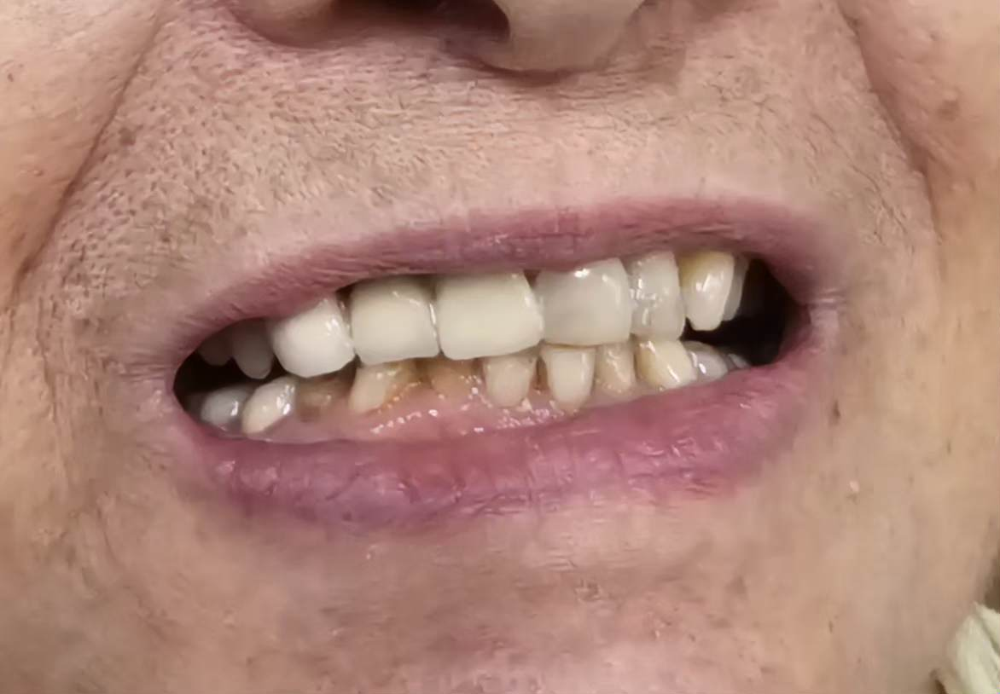
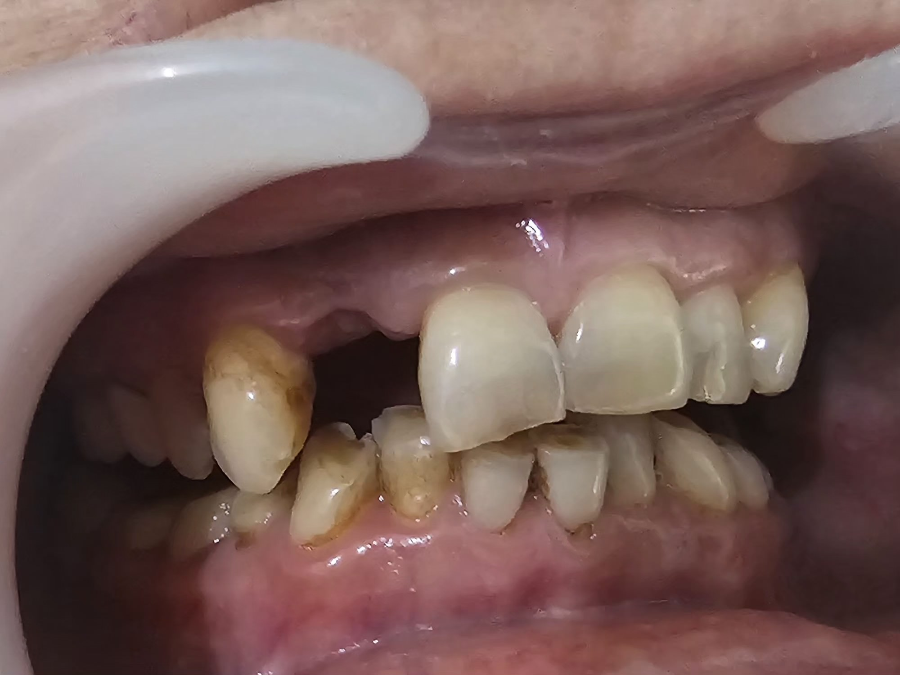

An anterior PFM bridge replaces missing front teeth by anchoring handcrafted porcelain-fused-to-metal crowns onto adjacent natural teeth for immediate strength and aesthetics.
An Anterior PFM (Porcelain-Fused-to-Metal) Bridge is a reliable restorative solution designed to fill gaps in your front smile without requiring implant surgery. This procedure connects artificial teeth (pontics) to adjacent natural supporting teeth (abutments) using a durable inner metal alloy sub-structure coated with tooth-colored porcelain. It offers an excellent combination of structural strength and visual naturalness for multi-tooth front restorations.
Strong internal metal framework for maximum structural support.
Tooth-colored porcelain coating for natural front tooth appearance.
Fixed bridge placed without implant surgery — uses adjacent teeth.
Complete smile restoration in just 2-3 visits.
Fill gaps in your front smile quickly without implant surgery.
Metal alloy core provides superior structural durability for biting.
Porcelain coating matches surrounding teeth for a natural look.
Decades of clinical success with PFM bridge restorations worldwide.
Evaluation of adjacent supporting teeth and bite analysis.
Abutment teeth shaped to accommodate the bridge framework.
Metal framework and porcelain coating crafted in the dental lab.
Precision fitting, shade matching, and permanent cementation.
Real clinical transformations completed by Dr. Sudhir Yadav & our specialist team at Muskan Dental.

With proper care, a PFM bridge typically lasts 10-15 years. Good oral hygiene and regular dental visits help extend its lifespan.
Both are excellent options. A PFM bridge is faster and doesn't require surgery, while an implant preserves bone and doesn't require altering adjacent teeth.
Yes. A PFM bridge restores full biting and chewing function. Avoid very hard foods like ice or hard candies to protect the porcelain coating.

Schedule your PFM bridge consultation today and restore your front smile with a durable, natural-looking bridge.